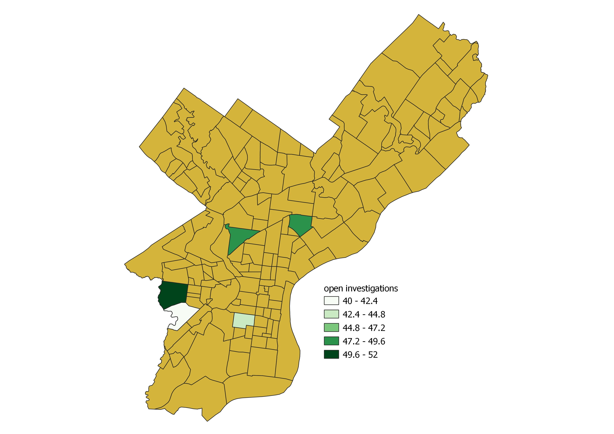

Homicides in Philadelphia Neighborhoods:
Identifying Dangerous Neighborhoods with PostGIS

This tutorial uses data compiled by the Washington Post about 52000+ criminal homicides in the United States over the last 10 years. The data includes the location of the homicide, whether an arrest was made and, in most cases, basic demographic information about each victim. It can be downloaded in CSV form here .
The tutorial walks you through loading the data into a database using a OSGeoW4 shell and ogr2ogr commands, normalizing the data via the ETL process with an included sql script, and running a few spatial queries that create views in Qgis so that the queried data can be visualized on a map.